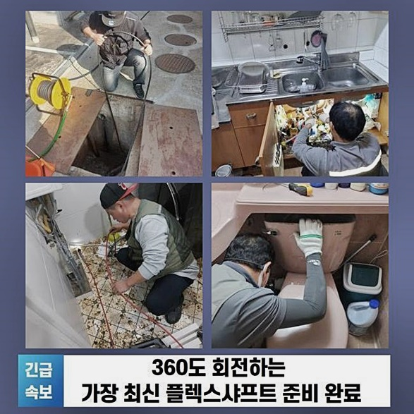
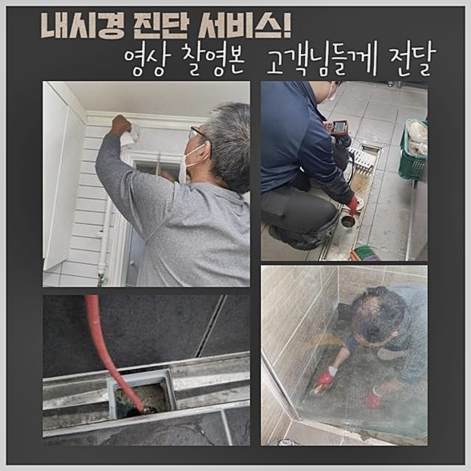
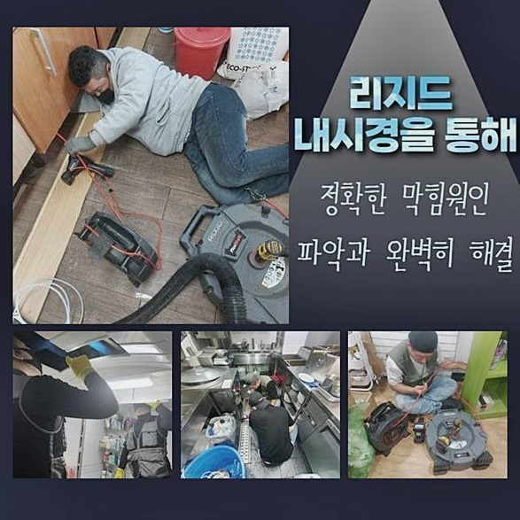
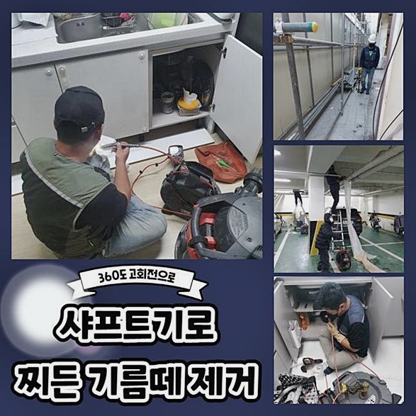
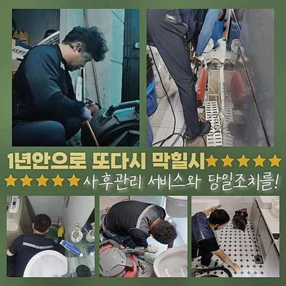
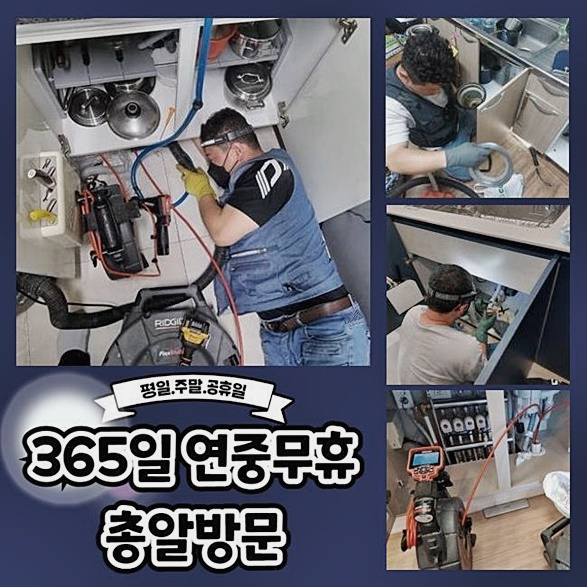
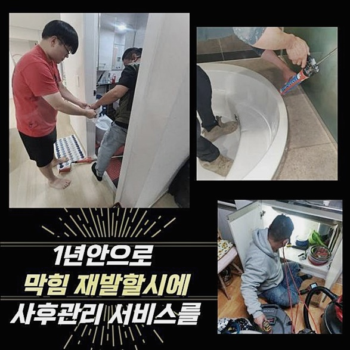

🏠 안산 중앙동변기역류 대부동 고압세척비용 해결방법
용인시 처인구 배관막힘 전문 시공 후기

📋 작업 개요
- 위치: 용인시 처인구, 수원시 영통구, 화성시 동탄
- 서비스 유형: 배관막힘, 고압세척, 내시경점검
- 작업 일시:
- 업체명: 하수구수사대 (010-5615-2118)
🔍 문제 상황
안산 중앙동변기역류 대부동 고압세척비용 해결방법
주변의 건물들엔 여러 시설물이 위치해있어요 그 가운데 중요하게 작용하는건 하수관로인데요
수도 사용을 하지않는 건물이 없듯이 건물에는 이에 해당하는 시설물이 적재적소 구성되어 있는것이 좋습니다
혹시라도 이물이 배수관으로 들어간 탓에 내측이 막힌다면 일상 전반에서 당혹스러움을 감수해야합니다
해당 이유로 물이 안빠지는 문제들이 생겨나면 즉각 고쳐내야 하겠습니다
허나 외부에서 주시할 때 이물들이 얼마만큼 자리하는건지 인지하기가 쉽지 않습니다
그리고 종류들도 예상해보는게 쉽지않아요
전문도구의 사용없인 전문인이랄지라도 완전한 세척을 수행하는게 불가해요
이러한 특징으로 인해서 고객님의 경우면 큰 문제가 되겠죠?
허나 아직까지도 조심성없게 수리를 진행하려는 의뢰자분도 수두룩합니다
sns 등이 발달되며 배관 장애의 조치들이 있을 수 있어요
이로인하여 압축장비나 크리너를 이용하는 방법들을 쉽게 접할 수 있죠
반대로 무조건적으로 해당 방법들로 해결될 순 없어요
그 연유는 안측의 까닭을 해결하지 않아 그런것인데요

🔎 원인 분석
💡 전문가 진단: 정밀 진단 장비를 사용하여 슬러지의 고착 여부를 판명하고 타격/세척 작업을 실시했습니다.
기름성분이 잔존해있을 가능성이 있고 음식잔해물이 안속에 자리해 증상이 생겼을수도 있답니다
마찬가지로 음식잔해나 알 수 없는 이물이 하수관을 막아버리기도 하죠
그러므로 시공을 진행할 예정이라면 전문가용 장치가 구비되어야 하겠습니다
가령 내시경장치 라 말씀드릴 수 있겠습니다
내시경기기는 선이 달려있고 머리쪽엔 렌즈들과 플래쉬가 있어요
위와같은 이유들로 어두움과 동시에 구경이 작아도 점검하는게 가능하겠습니다
그리고 청소할 때도 내시경기기는 없어서는 안되는 작용을 하는데요
장비의 사용이 부재되어 있다면 위험하게 세척을 할 수도 있겠는데요
이러한 까닭에 고객분들은 슬러지를 제거하는게 보통 일이 아닌것이죠
그러므로 클리너를 쓰는것에 그칠텐데요
그도 그럴것이 의도와 맞지 않은 도구들로 배수관에 파손이슈를 일으키면 수리비가 불어날거에요
마찬가지로 세척에 필요한 기계는 샤프트로 불리우는 녀석이죠
플렉스 샤프트의 가용을 통하여 세척기간까지 줄이게되는데요
문제를 일으키는 타겟을 설정하고 분쇄부분을 작동시키기에 세척이 진행되죠

🔧 작업 과정
해당 이유로 막혀버려 당혹스러워하시는 상황들이 생겨나 전문진을 선별할 예정이시면 장치의 보유량을 체크하시는 것도 좋습니다
선정 기준을 단순하게 수리비의 요소들만 추구하여 고객분을 설득시키는 업체도 가끔 있죠
경제적 지출도 물론 중요허나 이외에도 꼼꼼하게 살피시면 좋겠습니다
전문진의 스타일에 따라서도 방법이 상이할 수 밖에 없고 절차에서 다르죠
셀프조치로도 한시적 통수과정은 해내실 수 있어요
압축기들을 이용한다면 물막힘을 완화시키는것은 가능하겠습니다
허나 까닭을 인지하고 수리하지 않았으므로 미래에 악취가 하수관 깊은곳에서부터 생겨납니다
얼마전 찾아뵌 고객님 댁은 노후된 연립빌라였어요
문제들이 배수관으로부터 발생되었고 하수도 배수되지 않고있다 말하셨죠
반복해서 내보내야 조금씩 배수되기에 생활에 있어서도 곤란한 상태라고 설명하셨어요
내시경장치를 운용해 내부를 관찰하니 물티슈와 다양한 이물이 확인되었습니다
원체 배관의 내구성이 떨어진 설비시설들로 생각했는데 다양한 이물이 마구잡이로 축적되어 집수시설로 내보내지 못했던 것이였죠
배수관의 꺾인 부분엔 흡착물도 한눈에 들어왔습니다
바로 석션기기와 샤프트까지 마련했는데요
하수관로의 잔해물을 사라지게끔 하는 단계부터 착수하기 시작했죠
초반에는 석션기기가 사용되는데요
배수 문제는 양상을 확인하고 그에 맞는 기계를 사용하는것이 옳은데요
1차 세척을 마치고 고착물 제거를 위해 샤프트장비를 투입시켰어요
노커의 작동으로 흡착물을 없애주었어요
샤프트 작업시에도 유의해야될 것이 있죠
운용이 제대로 안되면 배관라인을 다치게 할 가능성이 있는 까닭에 빈틈없는 장비들의 이용이 필요하겠습니다
저희전문진들은 베테랑들로 위험한 엉성한 결과가 생겨날 가능성은 없는데요
그러나 일말의 가능성의 사태들에도 경각심을 가지고 내시경의 화면들도 체크해보아요


✅ 작업 완료
샤프트장비로 고착물 배출을 이어가니 이전과 달리 통로들이 넓게 되었어요
작업이 일단락되면 청소의 확인을 위하여 검수과정들을 거치는데요
해당 과정은 배수관로에 수돗물을 흘려보내어 손쉬운 방법을 통해 체크해봅니다
이러한 테스트가 간단한 방법으로 자리잡고 있고 배수 속도 저하의 증상을 관찰할 수 있는 과정으로 무조건적으로 진행한답니다
배수구로 물들을 내리니 다행스럽게도 조속히 빠지는걸 관찰하였으며 세척들을 끝맺었습니다
저희의경우 계시는 곳까지 어디일지라도 서둘러 찾아뵙고있으니 배수관로에 문제들이 야기되었다면 고민없이 연락주시면 됩니다 궁금 사항에 대해 응대하겠습니다




⚠️ 하수구 배관 막힘 예방 및 관리 가이드
- ✅ 머리카락, 비닐, 물티슈 등 물에 분해되지 않는 이물질은 절대 흘려보내지 마세요.
- ✅ 기름기 많은 식기는 설거지 전 키친타올로 먼저 기름때를 닦아내세요.
- ✅ 주기적으로 배수구에 뜨거운 물을 가득 부어주어 유지방 고착을 방지하세요.
- ✅ 작업 후 1년 이내 재발 시 무상 A/S 보증 서비스를 제공합니다.
💡 핵심 정리
- 확실한 장비 작업(내시경 점검 및 샤프트 스케일링)으로 원인을 뿌리 뽑습니다.
- 작업 후 1년 이내에 동일한 부위 재발 시 100% 무상 A/S 서비스를 보장합니다.
- 서울 · 경기 · 인천 전 지역에 24시간 언제든 긴급 출동할 수 있도록 항시 대기 중입니다.
❓ 자주 묻는 질문 (FAQ)
🚨 용인시 처인구 배관막힘 문제로 고민이신가요?
정확한 원인 진단과 확실한 시공으로 재발 없는 해결을 약속드립니다.
24시간 긴급 출동 | 서울 · 경기 · 인천 전지역 | 1년 내 재발 시 무상 A/S